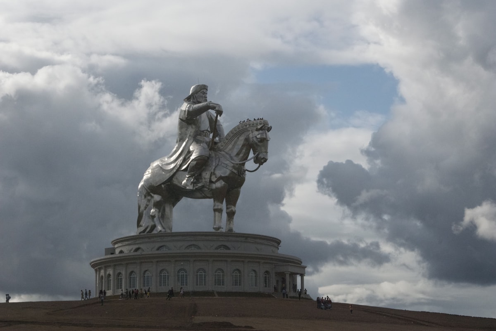
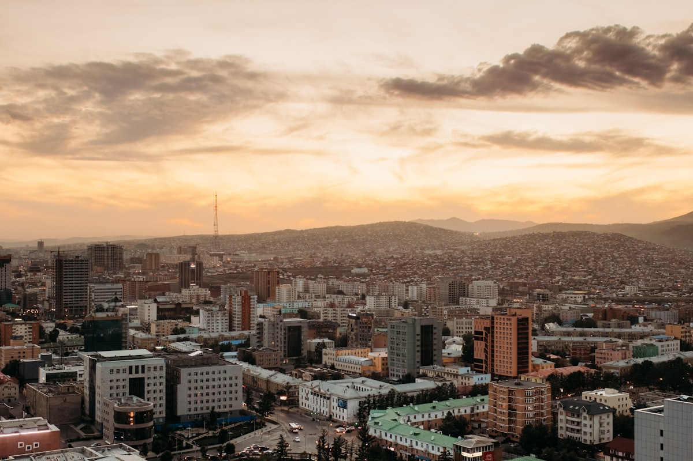
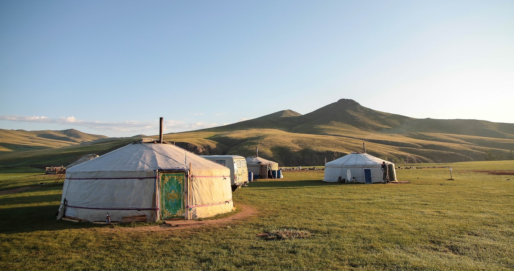
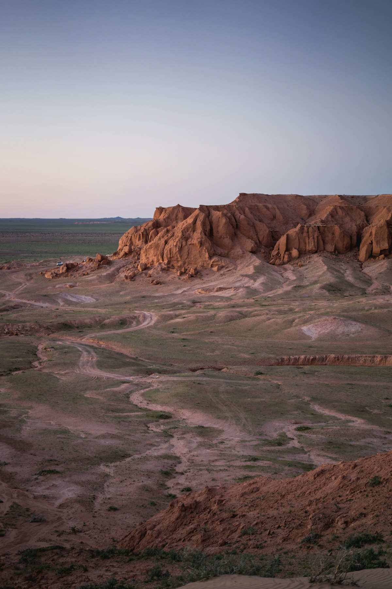
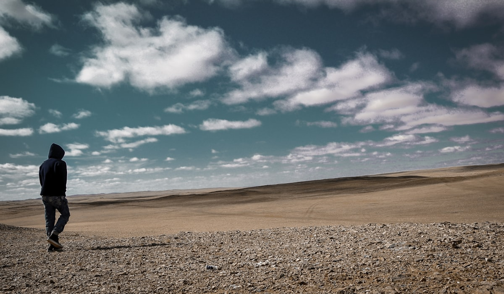

1核心结论
北京
→
乌兰巴托
→
特勒吉
→
哈拉和林
→
戈壁
→
返程
🕐 10 天怎么安排最合理
蒙古是「一城与无垠大地」的目的地：乌兰巴托承载历史与都市，向北向东是草原丘陵（特勒吉），向西是蒙古帝国故都哈拉和林，再往南则是被称为「地球上最后秘境」的戈壁。10 天刚好把城市、草原、古都、沙漠四段走完：前 4 天熟悉城市与草原，第 5–6 天转场古都，第 7–9 天深入戈壁，最后 1 天返程购物，节奏不赶、土路分段化解。
| 事项 | 结论 |
|---|---|
| 事项 | 结论 |
| 签证（最关键） | 中国普通护照需办理蒙古签证；可在线申请电子签（evisa.mn，旅游 K2 类），单次入境最长 30 天，费用约 51 美元，3–5 个工作日出签，出发前 2 周办理最稳 |
| 时差 | 0 小时（北京与乌兰巴托同时区），落地即玩，无倒时差负担 |
| 电源 | 230V，C 型/欧标 E 型插座（两圆脚），需带转换插头；蒙古包营地供电有限，带足充电宝 |
| 推荐方案 | 乌兰巴托 2 天 → 特勒吉 2 天 → 哈拉和林 2 天 → 南戈壁 3 天 → 返乌兰巴托 1 天 |
| 出行窗口 | 最佳 6–9 月（草原葱绿 + 7/11 那达慕大会）；4–5 月与 10 月昼夜温差大；冬季极寒不建议首次前往 |
| 预算（人均） | 经济 7000–10000 ／ 标准 12000–18000 ／ 舒适 25000–35000（人民币） |
| 货币 | 蒙古图格里克（MNT），1 元 ≈ 480 图格里克；城市刷卡/微信部分可用，草原戈壁只认现金 |
⚠️ 两个容易忽略的点
① 签证必须提前办：蒙古对中国护照不免签，电子签虽方便但需 3–5 个工作日，且出签前别订不可退的机票酒店；如从陆路口岸（二连浩特—扎门乌德）入境建议走使馆纸质签。② 草原与戈壁几乎没有 ATM 和刷卡：按行程天数备足蒙古图格里克现金，包车费用也多按美元/人民币与司机结算，提前谈妥。
2推荐行程 · 10 天版
以下为 10 天 9 晚的推荐节奏：乌兰巴托「城市段」打头，特勒吉「草原段」过渡，哈拉和林「古都段」回望帝国，南戈壁「沙漠段」收尾。每日主景点 ≤2 个，转场车程较长，安排弹性。
| 日期 | 行程 | 过夜地 | 主题 |
|---|---|---|---|
| D1 抵乌兰巴托 | 北京✈乌兰巴托（约 2.5h），入住市中心，傍晚成吉思汗广场看夜景 | 乌兰巴托 | 抵达+预热 |
| D2 | 甘丹寺 → 蒙古国家博物馆 → 博格达汗宫 → 翟山纪念碑日落 | 乌兰巴托 | 城市人文 |
| D3 | 成吉思汗骑马雕像（54km）→ 特勒吉国家公园，宿蒙古包营地 | 特勒吉 | 草原+雕像 |
| D4 | 特勒吉：乌龟石 → 骑马/徒步 → 草原日落与星空 | 特勒吉 | 草原徒步 |
| D5 | 特勒吉→哈拉和林（车程约 5h），途中牧民家访，宿哈拉和林营地 | 哈拉和林 | 古都前奏 |
| D6 | 哈拉和林：额尔德尼召寺 → 蒙古帝国旧都遗址 → 草原日落 | 哈拉和林 | 帝国故都 |
| D7 | 哈拉和林→巴彦扎格火燎崖（车程约 7h），看红色砂岩与星空 | 巴彦扎格 | 进入戈壁 |
| D8 | 洪格尔沙丘：鸣沙山徒步 → 骆驼骑行 → 沙丘日落 | 洪格尔 | 沙漠体验 |
| D9 | 南戈壁：约林峡谷（鹰之谷）徒步 → 达兰扎德嘎德市集 | 达兰扎德嘎德 | 戈壁收尾 |
| D10 返程 | 内陆航班或包车返乌兰巴托，国营百货购物，✈北京（约 2.5h） | 乌兰巴托 | 购物返程 |
🧭 路线可调原则
戈壁段若时间紧，可砍 D9 约林峡谷，D8 结束后直接从洪格尔返乌兰巴托；乌兰巴托想多留一天可把 D2 拆分。全程长途土路较多，包车强烈建议 4 人拼一台丰田陆地巡洋舰级别四驱车，人均更划算也舒服。
3逐小时时间线
以下为 10 天全程的逐小时执行时间线，可当作「当天打开照着走」的清单。标注 ※ 的可选项视体力与天气取舍。
D1 · 抵达乌兰巴托
入住市中心
🛫 抵达日
| 时间 | 事项 |
|---|---|
| 14:00–17:15 | 北京✈乌兰巴托（成吉思汗国际机场，约 2.5h，国航/蒙古航空每日班）。机场距市区约 50km |
| 17:15–19:00 | 机场巴士 X19 至成吉思汗广场（15000 MNT，约 1h）或打车（约 100000–250000 MNT）；入住市中心酒店 |
| 19:30–21:00 | 成吉思汗广场（免费）：国家宫、成吉思汗坐像与苏赫巴托雕像，广场夜景与喷泉 |
| 21:00 | 晚餐：广场周边烤串/蒙式西餐，提前换些图格里克现金 |
乌兰巴托出租车无计价器，上车前必须谈好价；晚间注意保暖，8 月夜晚也降到 12℃ 左右。
D2 · 乌兰巴托城市
甘丹寺 + 博物馆 + 博格达汗宫
🏛 城市日
| 时间 | 事项 |
|---|---|
| 08:30–10:30 | 甘丹寺（主殿约 5000 MNT）：蒙古最大藏传佛教寺院，26.5 米高的镀金章冉泽大佛，早课诵经声最震撼 |
| 11:00–13:00 | 蒙古国家博物馆（约 10000 MNT）：从匈奴到蒙古帝国的文物，成吉思汗历史与游牧文化速成 |
| 13:00–14:00 | 午餐：博物馆附近蒙餐（包子 Buuz + 奶茶） |
| 14:30–16:30 | 博格达汗宫博物馆（约 5000–10000 MNT）：末代活佛冬宫，蒙藏汉融合建筑，豹皮蒙古包馆藏 |
| 17:00–19:30 | 翟山纪念碑（免费）：城南高台俯瞰图拉河与城市全景，等一场日落 |
国家博物馆周一部分闭馆，尽量安排周二到周日；甘丹寺内部分殿堂不可拍照。
D3 · 成吉思汗雕像 + 特勒吉
世界最高骑马雕像
🐎 草原日
| 时间 | 事项 |
|---|---|
| 08:30 | 包车/拼团出发，沿图拉河东行 54km 前往成吉思汗雕像 |
| 09:30–11:30 | 成吉思汗骑马雕像（20000 MNT，10:00 开放）：40 米不锈钢巨像，乘电梯登马头观景台俯瞰草原 |
| 11:30–12:30 | 雕像园区午餐，可看蒙古传统弓箭/训鹰表演（另付费） |
| 13:00–14:00 | 继续东行约 30km 进入特勒吉国家公园 |
| 14:30–17:30 | 入住蒙古包营地，营地周边草原漫步，参观牧民家庭，喝奶茶吃奶皮 |
| 18:30–20:00 | 营地晚餐（手把肉/石头烤肉），草原落日与篝火 |
雕像门票记得用现金；特勒吉营地旺季（7–8 月）要提前 1 个月订。
D4 · 特勒吉草原
乌龟石 + 骑马
🏔 草原徒步日
| 时间 | 事项 |
|---|---|
| 08:00–09:00 | 营地早餐后出发，特瑞勒吉河畔晨雾 |
| 09:30–12:00 | 乌龟石（免费）：花岗岩风化成的龟形巨岩，徒步环线约 2h，登上附近山坡看全景 |
| 12:00–13:30 | 午餐：营地或山脚餐馆，蒙式炖羊肉 |
| 14:00–17:00 | 骑马体验（约 2h，视营地报价 300–600 元）：牵马漫行山谷，牧民带路 |
| 17:30–19:30 | 回营地休整，草原日落与银河：8 月天黑后银河清晰，带三脚架可拍星轨 |
骑马穿长裤与闭口鞋，听从牧民口令；草原昼夜温差大，傍晚加厚外套。
D5 · 特勒吉→哈拉和林
穿越中央草原
🚐 转场日
| 时间 | 事项 |
|---|---|
| 08:30–09:30 | 营地早餐，退房装车 |
| 09:30–12:00 | 西行穿越中央省草原，途中随手都是桌面级风景，路过牧民点可停车拍照 |
| 12:00–13:00 | 途中小镇午餐（蒙式简餐） |
| 13:00–15:00 | 继续西行，车程约 5h 后抵哈拉和林 |
| 15:30–17:30 | 牧民家访：挤奶、制作奶豆腐体验（视包车行程安排），感受游牧日常 |
| 18:00 | 入住哈拉和林蒙古包营地，晚餐后草原散步 |
乌兰巴托—哈拉和林约 365km，为双向单车道国道，转场日别排太满；晕车药提前吃。
D6 · 哈拉和林
蒙古帝国旧都
🏛 古都日
| 时间 | 事项 |
|---|---|
| 08:30–10:00 | 早餐后前往额尔德尼召寺（主殿 20000 MNT，大门免费）：1586 年用旧都废墟石材所建，108 座白塔绕寺一周 |
| 10:00–12:00 | 寺内主殿参观 + 世界文化遗产「鄂尔浑峡谷文化景观」资料馆，爬上寺南小山坡俯瞰白塔全景 |
| 12:00–13:00 | 午餐：哈拉和林镇，蒙古面片汤/烤包子 |
| 13:30–15:30 | 哈拉和林博物馆（约 10000 MNT）：蒙古帝国旧都（窝阔台汗时期世界中心）出土文物与复原模型 |
| 15:30–17:00 | 旧都宫城遗址（万安宫遗址）草地漫步，看鄂尔浑河与草原 |
| 17:30–19:30 | 营地周边草原日落，晚餐石头烤肉（Khorkhog） |
额尔德尼召寺内需顺时针绕行、尊重佛堂礼仪；博物馆与主殿都收现金。
D7 · 哈拉和林→巴彦扎格
进入南戈壁
🏜 转场日
| 时间 | 事项 |
|---|---|
| 07:30–08:30 | 营地早餐，提早出发 |
| 08:30–12:00 | 沿土路南行，穿越荒漠草原，途中可见骆驼群与野生动物（旱獭、黄羊） |
| 12:00–13:00 | 途中简餐（干粮/营地盒饭） |
| 13:00–15:30 | 继续南行，路面渐变为戈壁碎石路，颠簸路段放慢车速 |
| 15:30–18:00 | 抵达巴彦扎格火燎崖（Bayanzag，免费）：红色砂岩断崖，「火焰崖」因落日如燃烧得名，恐龙化石埋藏地 |
| 18:00–19:30 | 崖壁徒步与日落摄影，宿巴彦扎格附近蒙古包营地 |
| 20:00 | 戈壁星空：光污染几乎为零，肉眼可见银河 |
本日车程约 7h 且多为土路，是全程最累的一天；备足水、零食与充电宝，途中加油站稀少。
D8 · 洪格尔沙丘
鸣沙山 + 骆驼
🐫 沙漠日
| 时间 | 事项 |
|---|---|
| 08:00–09:30 | 营地早餐，车程约 1h 前往洪格尔沙丘（Khongoryn Els，免费） |
| 09:30–12:00 | 鸣沙山徒步：180km 长的世界最高沙丘带之一，登顶约 40 分钟，沙鸣如引擎轰鸣 |
| 12:00–13:30 | 沙丘脚下牧民家午餐，喝驼奶 |
| 14:00–16:00 | 双峰骆驼骑行（约 1h，营地或牧民报价 300–500 元）：沿沙丘脊线慢行，戈壁最经典画面 |
| 16:30–19:00 | 沙丘守日落，赤足走沙，光线最柔的时刻 |
| 19:30 | 返营地晚餐；若天气好可再上沙丘拍星空 |
沙丘徒步很耗体力，正午暴晒，安排在上午或傍晚；骆驼性子倔，上下骆驼听牧民口令。
D9 · 南戈壁
约林峡谷 + 达兰扎德嘎德
🏔 戈壁收尾日
| 时间 | 事项 |
|---|---|
| 08:00–09:00 | 营地早餐，退房南行 |
| 09:30–12:30 | 约林峡谷（鹰之谷，Yolyn Am）：戈壁古尔班赛汗国家公园内的花岗岩峡谷，盛夏谷底仍结冰，徒步往返约 2h |
| 12:30–13:30 | 峡谷口午餐（盒饭/蒙餐） |
| 14:00–15:30 | 前往南戈壁省会达兰扎德嘎德，逛本地市集，买戈壁纪念品（骆驼毛、戈壁玉） |
| 16:00–18:00 | 入住达兰扎德嘎德，休息整顿，晚餐当地烤羊肉 |
若选择次日内陆航班返乌兰巴托，今晚宿达兰扎德嘎德最方便；机场在城郊，次日早班机约 1.5h 到乌兰巴托。
D10 · 返程
购物 + 飞回北京
🛍 返程日
| 时间 | 事项 |
|---|---|
| 07:00–09:30 | 达兰扎德嘎德✈乌兰巴托（内陆航班约 1.5h，单程约 1000–1600 元）或包车返程（约 8–10h） |
| 10:00–13:00 | 国营百货商店购物：羊绒（蒙古羊绒全球顶级）、戈壁玉、银饰、奶茶与奶酪伴手礼 |
| 13:00–14:00 | 午餐：乌兰巴托蒙餐收官（石头烤肉/手把肉） |
| 14:30–16:00 | 前往成吉思汗国际机场，退税（如适用） |
| 18:30–20:35 | 乌兰巴托✈北京（约 2.5h，国航 C919），入境到家 |
回程航班多在傍晚，白天足够购物；羊绒制品认准 Gobi / EVSEG 等正规门店，避免景区高价。
4景点图鉴
必去（必去）/ 顺路（顺路）/ 可跳过（可跳过）。
必去
蒙古草原·蒙古包营地 200–800 元/晚
一晚毡帐即一段游牧人生。草原落日、奶茶篝火、肉眼银河是蒙古旅行灵魂。

必去成吉思汗骑马雕像 20000 MNT
世界最高骑马雕像（40m 不锈钢）。登马头观景台俯瞰无垠草原。

必去乌兰巴托·成吉思汗广场 免费
首都心脏。国家宫 + 成吉思汗坐像，环广场使馆、百货与剧院。
 必去
必去特勒吉国家公园·乌龟石 免费（骑马另计）
草原中风化花岗岩奇岩，骑蒙古马慢行山谷，最疗愈的一天。

必去哈拉和林·额尔德尼召寺 主殿 20000 MNT
蒙古帝国旧都废墟上的108 座白塔，鄂尔浑峡谷世界遗产。

必去戈壁·巴彦扎格火燎崖 免费
红色砂岩断崖，恐龙化石埋藏地，夕阳把崖壁照成燃烧的火。

必去戈壁·洪格尔沙丘 免费（骆驼另计）
“鸣沙山”洪格尔沙丘，世界最高沙丘带之一，沙鸣如引擎。
 顺路
顺路戈壁·骆驼骑行 约 300–500 元/h
乘双峰骆驼沿沙丘脊线缓行，戈壁游牧体验之最。
图片为 Unsplash 主题图（蒙古草原、成吉思汗雕像、乌兰巴托、特勒吉、蒙古包营地、戈壁沙丘与骆驼等均为蒙古主题实景），用于页面配图。更多免费/低价看点：国家博物馆、翟山纪念碑、哈拉和林博物馆、成吉思汗广场、特瑞勒吉河。
5路线地图
点击左侧节点可在地图上定位；点击地图 marker 会高亮对应节点。坐标为 WGS-84 转 GCJ-02 纠偏后标注。
6预算明细（三档）
以下为单人、不含购物的估算，人民币计价；出发地基准北京。汇率按 1 元 ≈ 480 蒙古图格里克（MNT）估算。往返机票按直飞淡旺季 2000–4000 元计；戈壁段若选内陆航班往返（达兰扎德嘎德）另加约 2000–3200 元。
| 项目 | 经济（7000–10000） | 标准（12000–18000） | 舒适（25000–35000） |
|---|---|---|---|
| 往返机票 | 北京⇄乌兰巴托直飞 2000–2800 | 含返程灵活 3000–4200 | 商务舱/灵活 6000–12000 |
| 住宿（9 晚） | 蒙古包营地+青旅 2500–3800 | 舒适营地+商务酒店 5000–7500 | 野奢营地+四星 10000–16000 |
| 交通（包车/吉普） | 拼团/大巴 1200–1800 | 4 人包吉普分摊 2500–4000 | 专车+英文向导 7000–11000 |
| 门票与活动 | 景点+骑马 400–700 | 含骆驼/骑马 1000–1500 | 全含+深度体验 2500–4000 |
| 餐饮（10 天） | 营地餐+市集 1200–1800 | 正常下馆子 2500–3500 | 烤全羊/特色宴 5000–8000 |
💰 标准档示例账单（人均约 15000 元）
往返机票 3500 + 住宿 9 晚 6000（平均 670/晚）+ 包车 4 人分摊 3000 + 门票活动 1200 + 餐饮 3000 + 签证/保险杂费 800 ≈ 15500 元。最大开销是住宿与包车：凑满 4 人拼一台丰田巡洋舰能把人均车费压到 3000 元内，是预算与体验的最佳平衡点。
7备选方案
10.1 只看草原古都的 7 天版
- D1 北京✈乌兰巴托，成吉思汗广场
- D2 甘丹寺+国家博物馆+博格达汗宫
- D3 成吉思汗雕像+特勒吉（宿营地）
- D4 特勒吉草原骑马徒步
- D5 特勒吉→哈拉和林（牧民家访）
- D6 额尔德尼召寺+旧都遗址
- D7 返乌兰巴托✈北京
10.2 亲子版调整
砍掉颠簸最久的 D7 长转场，戈壁段改为乌兰巴托✈达兰扎德嘎德进出（单程 1.5h），把巴彦扎格与洪格尔各安排半天；蒙古包营地选带独立卫浴的舒适型，提醒孩子草原蚊虫与温差，备好防蚊液与厚外套。蒙古对儿童大多免费/半价。
10.3 那达慕节限定版（7 月中）
那达慕大会（7 月 11–15 日）期间乌兰巴托有赛马、摔跤、射箭与开闭幕式，7 月 11 日上午国家体育场开幕式门票需提前 2–3 周预订；把 D2/D10 调到 7/11 前后，乌兰巴托酒店价格会上浮 30–50%，尽早锁定。
8交通与住宿
8.1 北京 ⇄ 蒙古 交通
| 方式 | 时长 | 参考价 | 备注 |
|---|---|---|---|
| 直飞（推荐） | 北京→乌兰巴托约 2.5h | 往返 2000–4000 元 | 国航（2026 年 8 月起 C919 执飞）/蒙古航空，每日 1–2 班 |
| 国际列车 K23 | 约 31h（隔日抵） | 硬卧约 900–1100 元，软卧约 1750–1900 元 | 每周二/六北京站 07:27 发车，经二连浩特换轮，体验派首选 |
| 转机 | 5–9h | 2500–4000 元 | 经呼和浩特/首尔/伊尔库茨克，旺季机票紧张时备用 |
⚠️ 蒙古境内交通核心提醒
草原戈壁段没有班车、没有路牌，几乎只能靠包车（吉普/丰田巡洋舰）。包车按天计价，3–4 人拼车最划算（约 100–150 美元/天含司机与油）。乌兰巴托—戈壁往返建议走内陆航班（达兰扎德嘎德，单程约 1.5h）或一次包车长途分段走，全程土路颠簸，务必选四驱车。
8.2 蒙古境内交通
- 机场→市区：新成吉思汗国际机场距市中心约 50km；机场巴士 X19（至成吉思汗广场）15000 MNT、X20 10000 MNT；打车 100000–250000 MNT（约 210–520 元）
- 市内公交：一票制约 500 MNT（约 1 元），覆盖主要景点；上车备零钱
- 出租车/网约车：无计价器，上车前议价，市区短途约 8000–15000 MNT；UBCab、inDrive 可先定价
- 包车（草原戈壁主力）：丰田陆地巡洋舰+当地司机按天计费约 100–150 美元/天，4 人分摊性价比最高
- 内陆航班：乌兰巴托✈达兰扎德嘎德（南戈壁省会）约 1.5h，单程约 1000–1600 元，省 2 天土路
- 火车：乌兰巴托站有南线/西线列车，适合短途体验；长途转场以包车为主
8.3 住宿区域推荐
| 区域 | 价格/晚 | 优点 | 短板 |
|---|---|---|---|
| 乌兰巴托·成吉思汗广场周边 | 经济 300–500 / 标准 500–900 | 景点集中、餐饮齐全、步行可达 | 旺季（7 月那达慕）上浮大 |
| 乌兰巴托·图拉河南岸 | 标准 600–1000 | 安静、视野好，近翟山 | 离核心区需打车 |
| 特勒吉·蒙古包营地 | 200–800（含早） | 草原景观、骑马方便 | 公共卫浴为主，夏季蚊虫多 |
| 哈拉和林·蒙古包营地 | 200–600 | 古都氛围、近额尔德尼召寺 | 条件简朴，供电与热水有限 |
| 戈壁·蒙古包营地 | 300–800 | 沙漠日落、星空绝佳 | 偏远地区信号弱、水资源紧张 |
9美食清单
🥩 必吃经典
- 石头烤肉（Khorkhog）：石烧羊肉+土豆胡萝卜，节日硬菜
- 手把肉（Shuulen）：清水炖带骨羊肉，配盐与蒜
- 烤全羊：营地/宴请场合的大菜，人多才划算
- 蒙古奶茶（Suutei Tsai）：咸奶茶，餐餐必备
🐪 戈壁风味
- 驼奶：洪格尔沙丘牧民家现挤
- 马奶酒（Airag）：那达慕季节限定，后劲足
- 戈壁羊肉汤：风干肉炖煮，暖胃
- 戈壁玉与沙葱：本地市集特色伴手礼
🥟 街头小吃
- Buuz 蒙古包子：羊肉蒸饺，全国标配
- Khuushuur 炸肉饼：出游/转场路上的干粮
- 奶皮子/奶豆腐：牧民自制乳品
- 酸奶与奶酪：戈壁驼奶酸奶更浓郁
📍 去哪吃
- 乌兰巴托成吉思汗广场周边蒙餐馆
- 国营百货美食层：一站尝遍蒙式简餐
- 哈拉和林镇小馆：面片汤+烤包子
- 蒙古包营地餐厅：晚宴石头烤肉、早餐奶茶奶皮
⚠️ 美食防坑
① 蒙古饮食肉类与乳制品为主、蔬菜稀少，连吃几天易上火，随身带果蔬片或维生素；② 马奶酒后劲大，别当饮料猛喝；③ 牧区水多为井水/矿泉，生水不要直接喝；④ 景区/机场的骆驼骑乘与「正宗烤全羊」报价虚高，营地或牧民家预订更实惠。
10出行贴士
10.1 行前清单
- 护照 + 蒙古电子签证（evisa.mn，打印批准函随身带）
- 现金（图格里克，草原戈壁只认现金，按天数备足）
- 转换插头（230V C/E 型两圆脚）+ 大容量充电宝
- 防晒霜/墨镜/遮阳帽 + 早晚厚外套（昼夜温差大）
- 肠胃药/感冒药/晕车药（戈壁土路颠簸必备）
- 离线地图提前缓存（草原戈壁信号弱）
- 骑马/骆驼穿长裤与闭口鞋
- 旺季（7–8 月）提前 1 个月订营地与包车
10.2 防踩坑
🧳 四条提醒
① 签证别拖：电子签 3–5 个工作日，出签前勿订不可退票；从陆路口岸入境的旅行者建议直接办纸质签。② 现金为王：偏远地区几乎无 ATM 与刷卡，按每日 300–600 元等值图格里克备足；包车费用提前与司机谈好结算币种。③ 戈壁土路颠簸，晕车药与颈枕必备，包车务必选四驱（丰田巡洋舰级别），避免面包车硬扛长途。④ 尊重游牧文化：进蒙古包先征得同意、不要指点佛像与长者、递来的奶茶要接住并喝完表示尊重。
🌟 一句话总结
蒙古是「辽阔与自由」的目的地——乌兰巴托的历史、特勒吉的草原、哈拉和林的帝国回响、戈壁的星辰与沙鸣，10 天刚好把这四种风景串成一条南北纵贯线。签证上官网办张电子签，包一台四驱车，剩下的就是朝着地平线一路开下去。